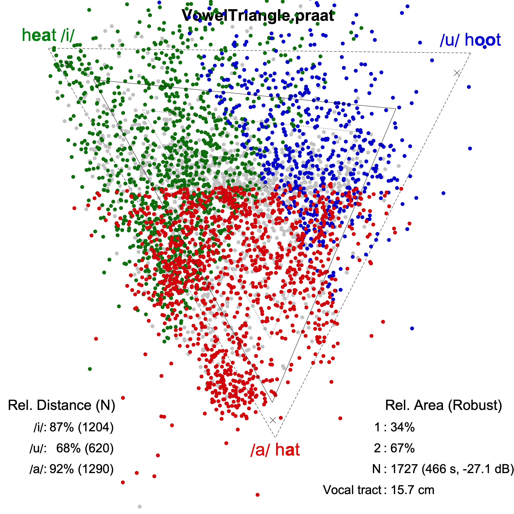

Vowel Triangle
A Praat script to calculate the Vowel Space Area from labelled and unlabelled running speech.
- Manual
- How to use the script.
- GitHub page
References
- van Son, R.J.J.H., Middag, C., & Demuynck, K (2018). "Vowel space as a tool to evaluate articulation problems", Proceedings of INTERSPEECH 2018, Hyderabad, India, 357-361
- Interspeech 2018 submission data
- Interspeech 2018 data and scripts
- Lammert AC, Narayanan SS. "On Short-Time Estimation of Vocal Tract Length from Formant Frequencies". PLOS ONE. 2015 Jul 15;10(7):e0132193.
The vocal tract length (VTL) is calculated as: VTL = 100 · 352.95 / (4 · φ) cm. Note that a different formant tracking algorithm is used in Pseudonymize Speech than was used in [2] and the estimated φ values here are used only as scale factors. They should not be interpreted as corresponding to "real" VTL values.
- SAMPA. Charts for languages: https://www.phon.ucl.ac.uk/home/sampa/index.html
Figure: Vowel Triangle plot (left) and corresponding settings (right).
